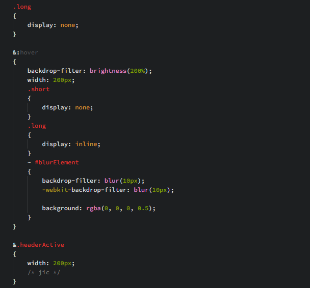
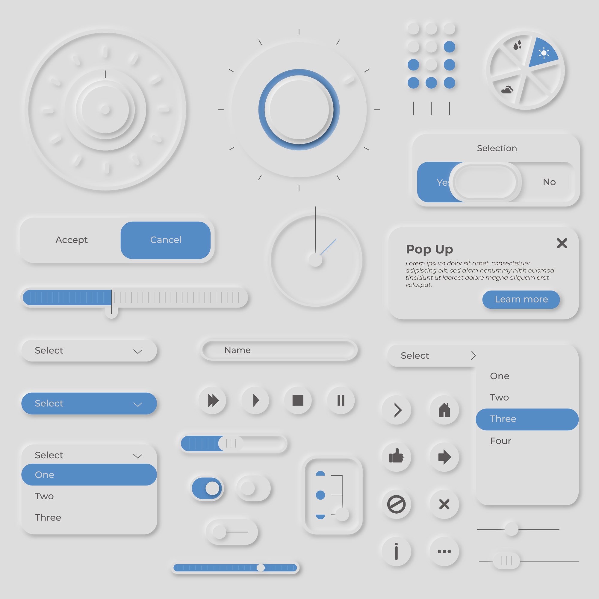
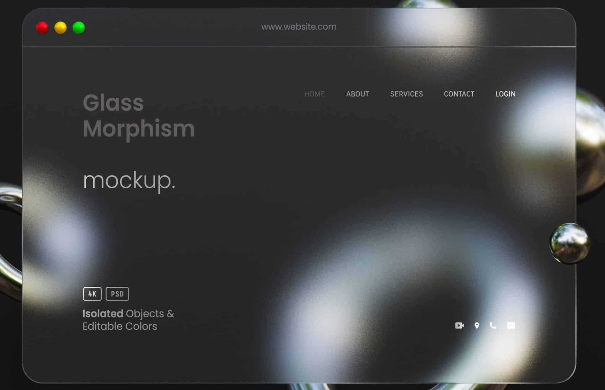
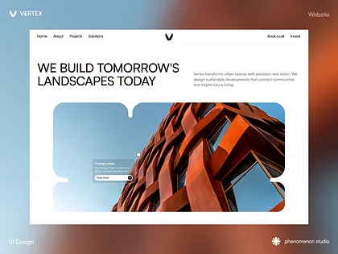
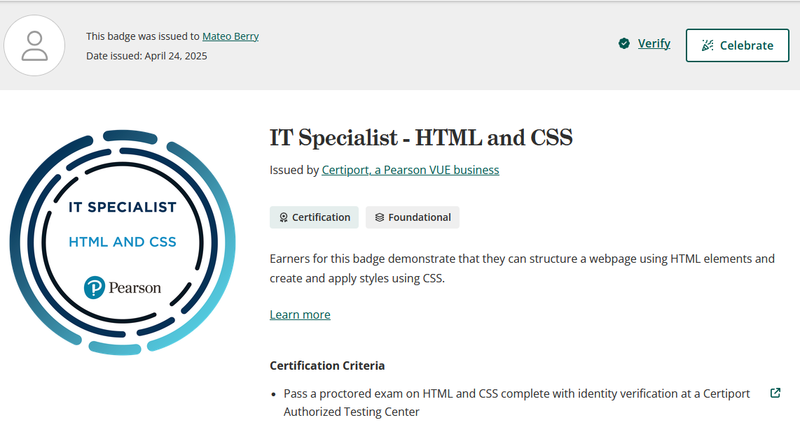

The Design Experience

Hello! My name is Mateo Berry, I am a front-end website developer.
I specialize in CSS, specifically neumorphic and glass design.
For this website, I wanted to use a mix between glass, neumorph and modern design. I also wanted to throw in a bit of mosaic if possible since that's a style that interests me. If you like what you see, don't be afraid to Contact Me!


Neumorphic design entails a focus on soft shadows to make it look like the object is "popping" out of the page. It's one of my favorite aspects of design because of how clean it is.

Glassmorphic design focuses on transparent, almost frosted glass elements. I love this in combination with neumorphism because it can make designs look extraordinarily clean, making the layout almost feel floatey or made of glass.

Modern design stromgly emphasizes a clean, empty design. A lot of the "design" that comes from modern design is the use of colors, borders, images, and mosaic arrangements.

As a part of my education in web development, I was issued an IT Specialist certification for HTML and CSS after passing a class called Advanced Computing Concepts, where advanced HTML and CSS was taught and proctored. I achieved the highest score in my class, and went on to continue studying computer sciences in Sweden.
You can find a link to my certification here